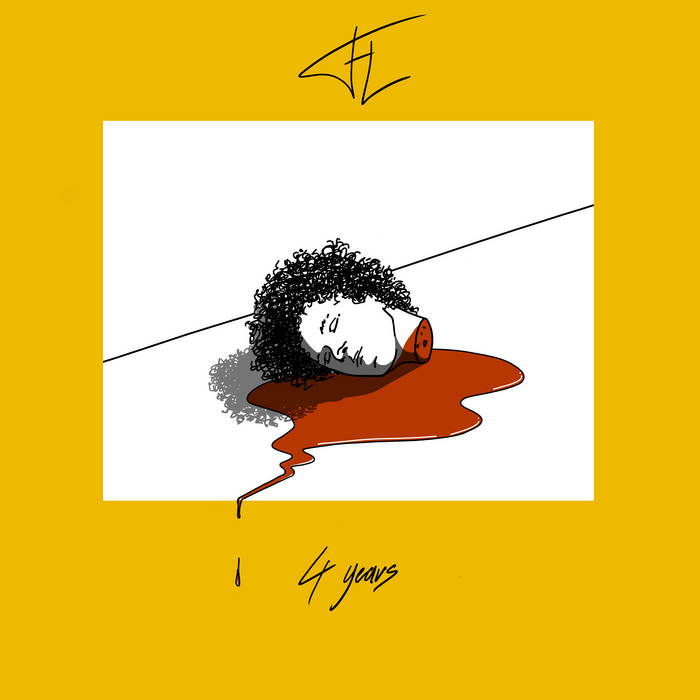

4 Years
paru le 14 décembre 2018
Album composé sur 4 ans. Bonne écoute à vous et j'espère que vous passerez un bon moment en écoutant mon premier album !
(Album à consommer avec une bonne bière voire plus si affinité !)
paru le 14 décembre 2018
Album composé sur 4 ans. Bonne écoute à vous et j'espère que vous passerez un bon moment en écoutant mon premier album !
(Album à consommer avec une bonne bière voire plus si affinité !)
paru le 28 juin 2019
2nd album. Pas si "Good Mood" que ça
paru le 31 juillet 2020
3ème album du projet "FL". Album se voulant diversifié et dans le but de se décrocher de l'ambiance trop sérieuse et triste de l'album précédent.
Le prochain album est en travail. Viens en concert pour entendre quelques morceaux en avant-première
paru le 26 avril 2019
Photo : Back To School par Hervé Collet
Allez jeter un oeil à ce qu'il fait, vous ne serez pas déçus !
paru le 22 mars 2020
4 titres d'FL revissés en acoustique pour patienter pendant le confinement !